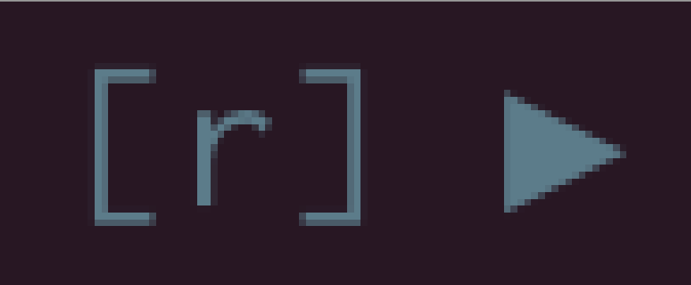
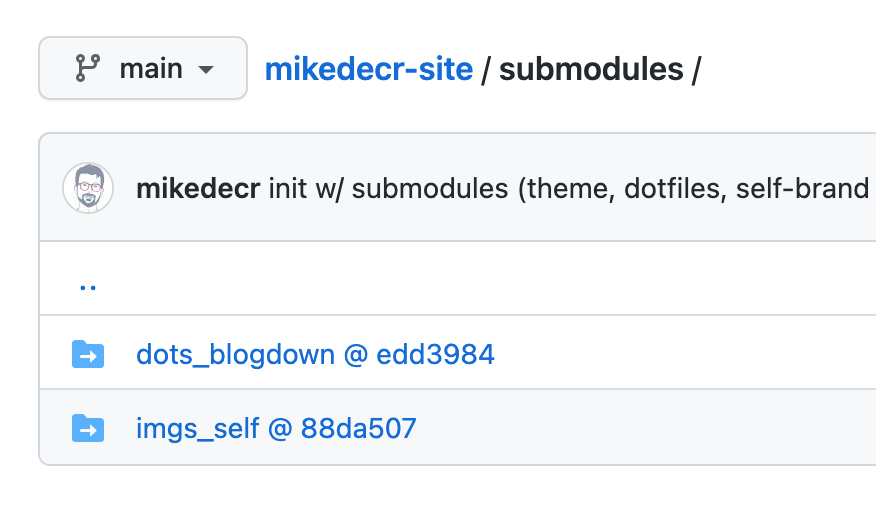

michael decrescenzo
About
Blog
Categories
All
(2)
code
(2)
git
(1)
Blog Posts

Replication code should be more usable.
code
My mind has been on
replication archives
lately. I often go digging in other peoples’ projects for data to practice some new statistical skill or another. And I have…
Michael DeCrescenzo
May 15, 2022

Highly modular blogging with Blogdown
code
git
When I finished graduate school, I tore down my website.
Michael DeCrescenzo
Nov 6, 2021
No matching items